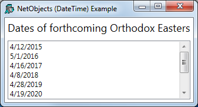

This example illustrates data binding using a vector of .Net objects, in this case DateTime objects.
The XAML shown below, describes a Window containing a StackPanel, inside which is a ListBox.
<Window
xmlns="http://schemas.microsoft.com/winfx/2006/xaml/presentation"
xmlns:x="http://schemas.microsoft.com/winfx/2006/xaml"
Title="NetObjects (DateTime) Example"
SizeToContent="WidthAndHeight" >
<StackPanel>
<TextBlock Text="Dates of forthcoming Orthodox Easters"
FontSize="18" Margin="5"/>
<ListBox Name="EasterDates" Height="100"
Margin="5" />
</StackPanel>
</Window>The function NetObjects is shown below.
∇ NetObjects;⎕USING;win;dt
[1] ⎕USING←'System'
[2] win←LoadXAML XAML
[3] win.dates←win.FindName⊂'EasterDates'
[4] dt←{⎕NEW DateTime ⍵}¨Easter
[5] win.dates.ItemsSource←2015⌶'dt'
[6] sink←win.ShowDialog
∇
NetObjects[3] uses FindName to obtain a ref to the ListBox (defined in the XAML) named EasterDates:
[3] win.dates←win.FindName⊂'EasterDates'
The global variable Easter contains a vector of 3-element numeric vectors representing the dates of forthcoming Orthodox Easter Sundays.
↑Easter 2015 4 12 2016 5 1 2017 4 16 2018 4 8 2019 4 28 2020 4 19 2021 5 2 2022 4 24 2023 4 16 2024 5 5
NetObjects[4] creates a vector of DateTime objects from the global variable Easter.
[4] dt←{⎕NEW DateTime ⍵}¨EasterThen, NetObjects[5] creates a binding source object from this array and assigns it to the ItemsSource property of the ListBox.
[5] win.dates.ItemsSource←2015⌶'dt'
)LOAD WPFIntro
DataBinding.NetObjects.NetObjects
